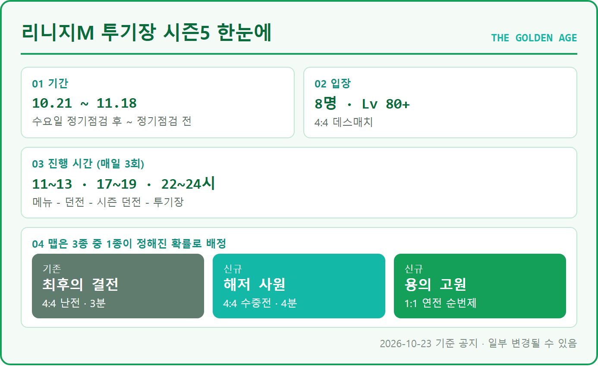
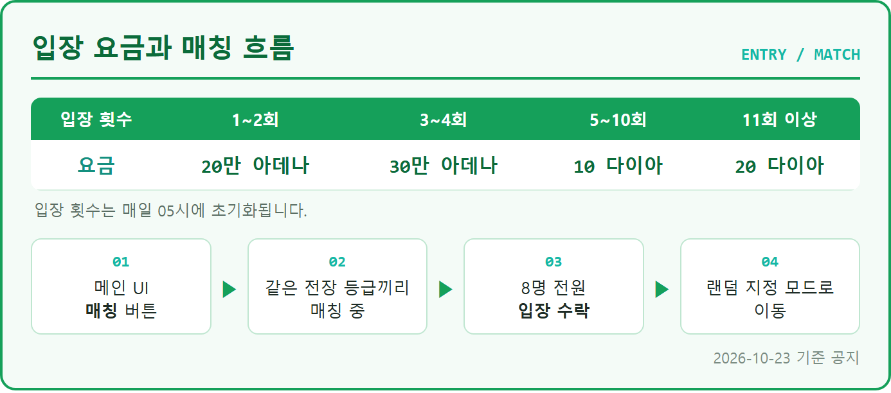
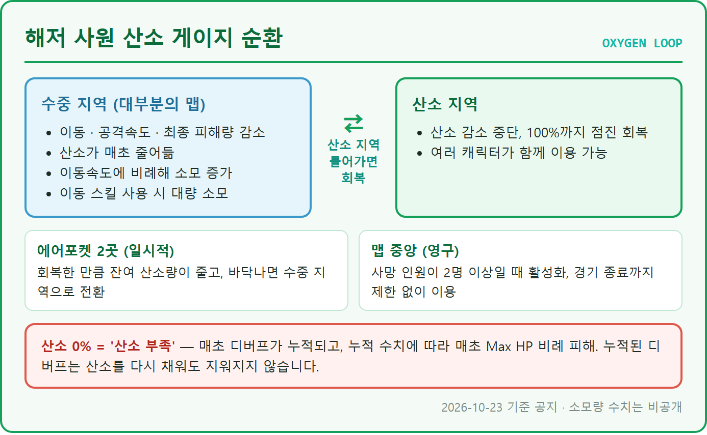
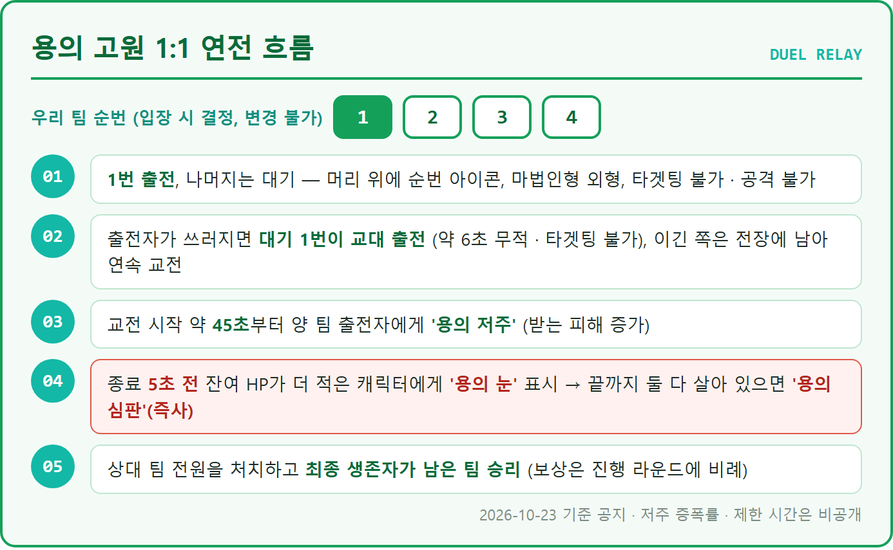
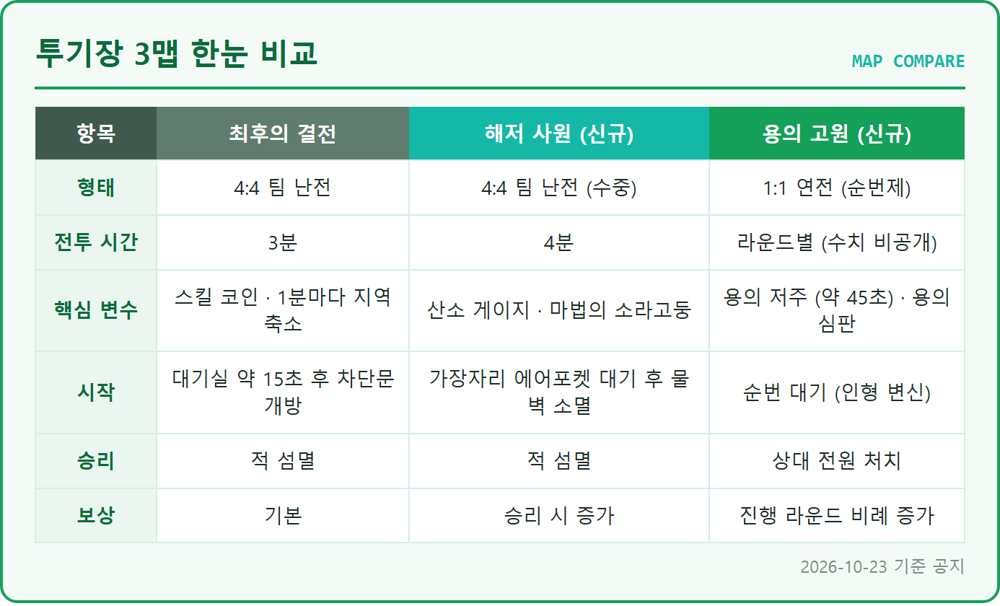

리니지M 투기장 시즌5 해저 사원 용의 고원 차이와 추천 플레이, 최후의 결전 비교 신규 복귀 유저 이용법
※ 해당 게임은 확률형 아이템을 포함하고 있습니다.
투기장 시즌5부터 맵이 3종으로 늘었습니다. 기존 '최후의 결전'에 신규 맵 '해저 사원'과 '용의 고원'이 합류했고, 판마다 이 중 1종이 확률로 정해져요. 투기장이 처음이거나 오랜만에 돌아오신 분들 기준으로, 기본 이용법부터 신규 맵 2종의 차이, 추천 플레이까지 순서대로 정리했어요. 처음 들어가는 분도 한 번에 따라오실 수 있게 쉬운 말로 풀었거든요.
📜 QUEST LOG ┃ 글 한눈에 보기
1. 시즌5 한눈에 → 2. 기본 이용법 → 3. 최후의 결전 → 4. 해저 사원 → 5. 용의 고원 → 6. 3맵 비교 → 7. 추천 플레이 → 8. 자주 묻는 질문
1. 시즌5 한눈에, 신규 맵 2종 추가
투기장 시즌5는 10월 21일(수) 정기점검 후부터 11월 18일(수) 정기점검 전까지 열리고, 신규 맵 해저 사원ㆍ용의 고원이 더해져 3종 중 1종이 확률로 배정됩니다.

보시면 기간, 입장 조건, 시간대, 맵 3종이 한 장에 들어가 있어요.
신규 2종의 핵심 차이는 이렇습니다. 해저 사원은 4:4 팀 난전인데 산소 게이지가 계속 줄어드는 수중전이고, 용의 고원은 팀원이 입장 순번대로 한 명씩 나가는 1:1 연전이에요.
2. 투기장 기본 이용법, 입장부터 보상까지
투기장은 메뉴 – 던전 – 시즌 던전 – 투기장으로 들어가는 레벨 80 이상 콘텐츠이고, 매일 11~13시, 17~19시, 22~24시에 매칭 버튼을 누르면 8명(4:4)이 잡히는 방식입니다.
입장 요금은 1~2회는 20만 아데나, 3~4회는 30만 아데나, 5~10회는 10 다이아, 11회부터는 20 다이아이고, 횟수는 매일 05시에 초기화됩니다. 매칭은 메인 UI의 '매칭' 버튼을 누르면 시작돼요. 같은 전장 등급끼리 매칭이 잡히고, 8명 전원이 입장을 수락하면 랜덤으로 지정된 모드로 넘어갑니다.
전장 등급은 매주 수요일 05시 기준으로 정해져요. 레거시/리부트 월드군 안에서 보유 캐릭터 중 가장 높은 변신 등급으로 소속 전장이 배정되고, 그 주에는 같은 전장끼리 경쟁합니다(레거시 4전장ㆍ리부트 3전장). 매칭이 잡힌 뒤 입장 취소 같은 행동이 반복되면 매치 패널티가 점수로 쌓이는데, 대기 시간이 2분에서 10분까지 늘고 5점 이상이면 12시간 동안 매칭이 막힙니다. 입장 취소는 되도록 피하세요.

지금 보시는 카드처럼 요금은 4구간, 매칭은 4단계예요.
경기가 끝나면 결과창에 참가한 캐릭터들의 실제 닉네임이 공개되고, 순위에 따라 투기장 경험치와 전용 보상이 차등으로 나옵니다. 투기장 등급은 신병 → 숙련병 → 정예병 → 베테랑 순이며, 단계를 달성할 때마다 '드래곤의 다이아몬드' 300개와 종합 신비한 카드 뽑기팩 상자 1개가 우편으로 옵니다. 일일ㆍ주간 랭킹은 전장별 상위 300명까지 보상이 있고, 모은 '영광의 주화'는 시즌 상점에서 신비한 변신ㆍ마법인형ㆍ성물 뽑기 등으로 바꿀 수 있어요(전체 목록은 패치노트에서 확인하세요).
메인 UI의 매칭 버튼과 매칭 중 표시를 같이 보시면 흐름이 이어져요.
결과창에서 순위와 닉네임이 공개되는 화면입니다.
3. 기존 최후의 결전, 비교 기준
'최후의 결전'은 총 3분 동안 4:4로 싸우고 1분이 지날 때마다 전투 지역이 좁아지는 기존 맵입니다.
매칭 수락 후 대기실에서 약 15초를 기다리면 차단문이 열리고 전투가 시작돼요. 곳곳에 놓인 '스킬 코인'을 먹으면 모드 전용 스킬을 최대 2개까지 얻고, 코인당 1회 쓸 수 있으며 다시 먹으면 재사용할 수 있습니다. 버프는 아군 전체에 슈퍼아머(무적)ㆍ타겟 아웃ㆍ신속ㆍ회복ㆍ정화가 걸리고, 디버프는 적군 전체에 스턴ㆍ브레이크 가드ㆍ슬로우ㆍ데스힐ㆍ블라인드가 걸립니다. 적군을 먼저 섬멸하면 승리예요.
이 맵이 나머지 두 맵의 비교 기준이에요. 최후의 결전은 코인 스킬이 판을 흔든다면, 신규 2종은 맵 자체의 규칙(산소, 순번)이 승부를 가릅니다.
4. 해저 사원, 산소가 핵심인 4분 수중전
'해저 사원'은 4분 동안 4:4로 싸우는 수중 맵이고, 대부분의 지역이 수중이라 산소 지역을 오가며 싸우는 게 핵심입니다.

보시는 것처럼 수중에서 닳고 산소 지역에서 채우는 순환이 기본 구조입니다.
시작은 같은 팀 2명씩 나뉘어 맵 가장자리 시작 지점 4곳의 일시적 산소 지역으로 이동하는 것부터예요. 잠시 뒤 물벽이 사라지면 수중 전투가 시작됩니다. 수중 지역에서는 이동ㆍ공격속도ㆍ최종 피해량이 줄고 산소가 매초 닳는데, 빨리 움직일수록, 이동 스킬을 쓸수록 더 닳아요('수중 호흡' 효과는 적용되지 않습니다). 산소 지역에 들어가면 닳는 게 멈추고 100%까지 서서히 회복되며 여러 명이 함께 쓸 수 있고, 일시적 산소 지역(에어포켓) 2곳과 맵 중앙의 영구 산소 지역으로 이루어져 있습니다.
싸우다 보면 '마법의 소라고둥'을 먹을 수 있는데, 먹을 때마다 'PVP 대미지 증가 +3%'가 중첩되고 머리 위에 표시되며 경기가 끝날 때까지 유지됩니다. 이기면 기존 맵보다 늘어난 종료 보상을 받아요.
산소가 0%가 되면 '산소 부족' 상태가 되어 매초 디버프가 쌓이고, 쌓인 수치만큼 최대 HP 비례 피해를 받습니다. 이 디버프는 산소를 다시 채워도 지워지지 않아요. 공지에 안 나온 부분은 산소 소모ㆍ회복 수치와 에어포켓 산소량이라, 이 글에도 숫자는 적지 못했습니다.
화면 중앙 하단의 산소 게이지가 이렇게 표시돼요.
주인장이 해저 사원에서 느낀 산소 소모는 〔생각보다 빨랐어요 / 견딜 만했어요 / 아직 못 들어가 봤어요〕.
5. 용의 고원, 순번대로 이어 싸우는 1:1 연전
'용의 고원'은 팀원 4명이 입장 때 정해진 순번(변경 불가)대로 한 명씩 출전하는 1:1 연전이고, 쓰러진 쪽 자리는 같은 팀 대기 1번이 이어받습니다.

지금 보시는 순서대로 출전, 교대, 저주, 심판이 이어집니다.
대기자는 순번 아이콘이 머리 위에 뜨고 타겟팅이 안 되며, 마법인형 외형으로 경기를 관전합니다. 이동은 자유롭지만 공격은 못 하고, 일반ㆍ파티 채팅은 쓸 수 있어요. 출전자가 사망하면 대기 1번이 약 6초 무적ㆍ타겟팅 불가 상태로 출전하고, 직전 라운드 승자는 전장에 남아 연속 교전을 합니다. 이 교대 시간에 승자는 공격받지 않지만, 이미 걸린 지속 피해로는 쓰러질 수 있어요.
교전이 약 45초 지나면 '용의 저주'로 양쪽 출전자가 받는 피해가 커집니다. 끝나기 5초 전에는 남은 HP가 더 적은 캐릭터에 '용의 눈'이 뜨고, 끝까지 양쪽이 살아 있으면 그 캐릭터가 '용의 심판'(즉사)을 받습니다. 상대 팀 전원을 처치해 최종 생존자가 남은 팀이 이기고, 종료 보상은 진행 라운드에 비례해 기존보다 늘어나요.
용의 저주의 증폭률과 1:1 교전 제한 시간도 공지에 안 나온 부분이에요.
대기 중에는 마법인형 외형에 순번 아이콘이 머리 위에 떠요.
6. 3맵 비교, 신규 2종은 무엇이 다른가
세 맵의 가장 큰 차이는 형태로, 최후의 결전과 해저 사원은 4:4 난전이고 용의 고원은 순번제 1:1 연전이며, 해저 사원은 산소가, 용의 고원은 교전 후반 HP가 각각 따로 붙는 변수입니다.

세 맵을 형태부터 보상까지 한 표로 놓고 비교한 그림이에요.
| 구분 | 해저 사원 | 용의 고원 |
|---|---|---|
| 팀플 성격 | 4명이 함께 움직이는 난전 | 한 명씩 나가는 순번 연전 |
| 신경 쓸 것 | 산소 지역 위치, 이동 스킬 사용량, 소라고둥 | 교전 후반 HP 비율, 교대 타이밍 |
7. 추천 플레이 비교, 규칙에서 읽은 추론
공지 규칙만 놓고 추론하면 해저 사원은 산소를 아끼며 소라고둥을 챙기는 쪽, 용의 고원은 교전 후반의 HP 비율을 관리하는 쪽이 유리해 보입니다. 아래는 검증된 공략이 아니라 규칙에서 끌어낸 추론이에요.
해저 사원 (추론)
이동 스킬이 산소를 대량으로 쓰니 남발하지 말고 꼭 필요할 때만 쓰는 편이 낫습니다. '산소 부족' 디버프는 산소를 채워도 안 지워지므로 0%까지 내려가기 전에 산소 지역으로 돌아가세요. 소라고둥은 먹을수록 +3%씩 쌓이니 전투 틈틈이 챙길 가치가 있어 보입니다. 사망자가 2명 이상 나오면 중앙 영구 산소 지역이 열리니, 인원이 밀릴 때는 거기서 버티는 것도 방법이에요.
용의 고원 (추론)
양쪽 모두 약 45초부터 받는 피해가 늘어나니 시간을 끄는 쪽이 오히려 위험해질 수 있습니다. 종료 5초 전에 상대보다 HP가 적으면 심판의 대상이 되니, 교전 후반에는 서로의 HP 비율을 계속 비교하며 싸우세요. 이긴 직후 교대 시간에는 공격받지 않지만 지속 피해로는 쓰러질 수 있으니, 직전 교전에서 걸린 지속 피해 효과도 조심하세요.
주인장은 시즌5 투기장을 〔자주 도는 편이에요 / 가끔 들어가요 / 아직 못 들어가 봤어요〕.
8. 자주 묻는 질문
Q. 맵을 직접 고를 수 있나요?
3종 중 1종이 정해진 확률로 선택되는 방식이라, 판마다 걸리는 맵을 직접 고르지는 않습니다.
Q. 죽으면 손해가 있나요?
투기장은 사망해도 경험치나 아이템이 사라지지 않고, 죽은 뒤에는 아군과 적군의 경기를 관전할 수 있어요.
Q. 시즌과 보상은 언제까지인가요?
시즌5는 11월 18일 정기점검 전까지이고, 주간 랭킹 보상 상자는 2026년 11월 25일 05시에 삭제됩니다.
참고한 곳 (2026.10.23 기준)
· 리니지M 10월 21일 패치 노트(공식)
· 리니지M CM 아지트 [안내] 투기장 시즌5 안내(공식)
▶ 같이 보면 좋은 글
· 리니지M 황혼 산맥 디펜스 시즌6 운영 꿀팁 라즈엘 그림리퍼 업적 공략
· 리니지M 신성검사 혈맹 유니크 스킬 세라핌 습득 후기 저주 면역 범위
· 리니지M 속성 코어 휘장 사용법, 4속성 중 뭐가 좋을까?